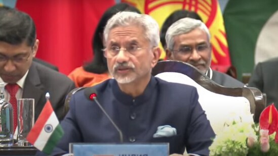
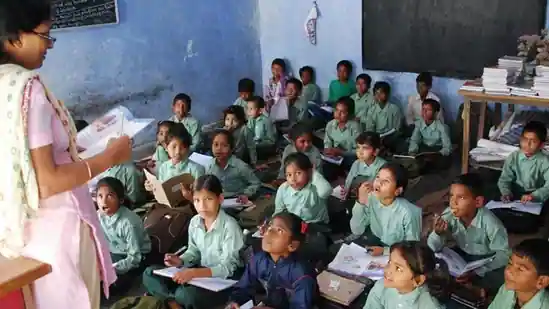
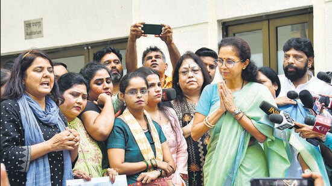
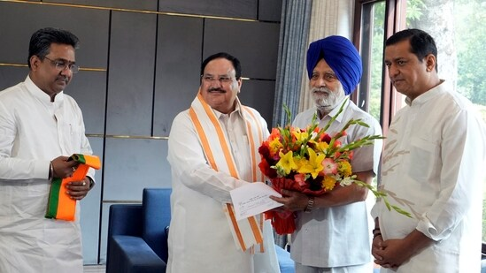
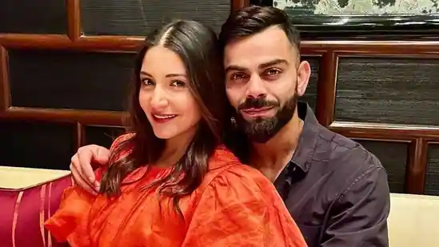

JEE Advanced 2023: IIT JEE registration ends on May 7, apply at jeeadv.ac.in

Indian Institute of Technology, Guwahati will close the registration process for JEE Advanced 2023 on May 7, 2023. Candidates who want to apply for IIT JEE can do it through the official site of JEE Advanced at jeeadv.ac.in. The last date for payment of application fees is till May 8, 2023. The admit card will be available on the official website from May 29 till June 4, 2023. The JEE advanced 2023 exam will be conducted on June 4, 2023 in two shifts- first shift from 9 am to 12 noon and second shift from 2.30 pm to 5.30 pm.
In Karnataka battle, will caste vs religion play dominant role?

Is the Congress deluded by its own propaganda, internal surveys and rhetorical claims of a 130-plus tally in the upcoming elections? Can it decisively wrest power from the Bharatiya Janata Party (BJP) whose challenge is weakened by anti-incumbency and the lack of a pan-Karnataka face after BS Yediyurappa’s semi-retirement? More importantly, will the outcome be decisive the way it was in 2013? Or will the electorate throw up a fractured verdict like in 2018?
IPL 2023 Points Table, Orange and Purple Cap: Kolkata Knight Riders get revenge, Mohammed Shami remains on top

Kolkata Knight Riders defeated Sunrisers Hyderabad by five runs in Match 47 of IPL 2023, at the Rajiv Gandhi International Stadium in Hyderabad on Thursday. Chasing a target of 172 runs, SRH were restricted to 166/8 in 20 overs, despite a knock of 41 runs off 40 balls by Aiden Markram. Meanwhile, Heinrich Klaasen also played a knock of 36 runs off 20 deliveries. Shardul Thakur and Vaibhav Arora were in hot bowling form for KKR and scalped two dismissals each.
Is India odd man out in China-dominated SCO and BRICS?

With the rise of China as a global economic and military super-power inevitable this decade, India will be the odd man out in the SCO and the BRICS as virtually all the members of these groupings are recipients of copious infrastructure aid from Beijing in the name of Belt-Road Initiative (BRI). Brazil is still to join the BRI but has already received some USD 66 billion in infrastructure investment from China with its Leftist President Luiz Inacio Lula da Silva cozying up to President Xi Jinping in Beijing last month.
Jaishankar welcomes Pakistan's Bilawal Bhutto-Zardari for SCO meeting | WATCH

External affairs minister S Jaishankar on Friday welcomed his Pakistani counterpart Bilawal Bhutto-Zardari for the meeting of the Council of Foreign Ministers (CFM) of the Shanghai Cooperation Organisation (SCO). The two exchanged pleasantries and posed for photographs before Bhutto-Zardari headed for the crucial meeting in Goa. Bilawal Bhutto-Zardari is the first Pakistani foreign minister to visit India in almost 12 years amid continuing strain in ties between the two countries on a host of issues, including cross-border terrorism in Jammu and Kashmir.
Manipur clashes: Genesis of the decades-old Meitei-Kuki divide

On Wednesday, thousands of tribals took out a march in the state’s 10 hill districts, where most of the tribal population resides, opposing a proposal to grant scheduled tribe (ST) status to the Meitei community, which comprises around 53% of Manipur’s population and is based mainly in the Imphal Valley.
The All Tribal Students Union of Manipur (ATSUM), Manipur’s most influential student body, alleges that clashes started after some miscreants burned a portion of the Anglo-Kuki War Memorial gate at Churachandpur. ATSUM office bearers claim the march ended peacefully, but that when the war memorial was burnt, it aggravated the situation that led to clashes between Meiteis and other tribals. Several properties and vehicles of Meiteis were targeted.
Uddhav camp reacts to criticism in Sharad Pawar's book: ‘Wrong information’

Shiv Sena (UBT) leader Sanjay Raut on Thursday dismissed the criticism of party chief Uddhav Thackeray in Nationalist Congress Party (NCP) supremo Sharad Pawar's autobiography as “wrong information.” Pawar, in his revised autobiography ‘Lok Majhe Sangati’, questioned Thackeray's absence from the chief minister's office during the coronavirus pandemic (Covid-19), an issue often raised by the Bharatiya Janata Party (BJP). He wrote it was difficult to fathom why Thackeray as chief minister chose to visit the state secretariat only twice during the coronavirus pandemic.
'Virat Kohli won't do it...': Harbhajan calls Shastri's 'filler for Rohit captaincy' fix 'huge step back'

KL Rahul, Rishabh Pant, Shikhar Dhawan, Jasprit Bumrah, Hardik Pandya, Dinesh Karthik… and of course Rohit Sharma. Captaincy in Indian cricket has become a round of musical chairs ever since Virat Kohli stepped down. Mostly because Rohit has time and again been either rested or gotten injured. After Rohit was appointed India's all-formats captain in January of 2022, he missed the ODI series in South Africa, the rescheduled fifth Test against England, and the Test series in Bangladesh. In his absence, almost everyone had a go, albeit without much success. Under Rahul, India were whitewashed 0-3 in South Africa, and when he pulled his hamstring making way for Pant to take over, the T20Is at home against the same opponents finished 1-1.
With Pak FM in attendance, Jaishankar talks tough on terrorism at SCO meeting

KL Rahul, Rishabh Pant, Shikhar Dhawan, Jasprit Bumrah, Hardik Pandya, Dinesh Karthik… and of course Rohit Sharma. Captaincy in Indian cricket has become a round of musical chairs ever since Virat Kohli stepped down. Mostly because Rohit has time and again been either rested or gotten injured. After Rohit was appointed India's all-formats captain in January of 2022, he missed the ODI series in South Africa, the rescheduled fifth Test against England, and the Test series in Bangladesh. In his absence, almost everyone had a go, albeit without much success. Under Rahul, India were whitewashed 0-3 in South Africa, and when he pulled his hamstring making way for Pant to take over, the T20Is at home against the same opponents finished 1-1.
NCP Meeting Live: Ajit Pawar arrives at the party office in Mumbai

A committee of the Nationalist Congress Party (NCP) leaders picked by Sharad Pawar to pick his successor will by meeting at 11 am today at the party headquarters. The veteran leader had named the members of the panel after announcing his decision to step down as the NCP chief on Tuesday.The committee comprises senior members like Supriya Sule, Ajit Pawar, Praful Patel, Jayant Patil, Chhagan Bhujbal, Dilip Walse Patil, Anil Deshmukh, Rajesh Tope and others.
'Beware of IPL lifestyle. Lot of people will...': Sachin Tendulkar's bone-chilling advice for 17-year-old Kuldeep Yadav

Team India's star spinner Kuldeep Yadav has had an eventful career so far – both, with the national team as well as in the Indian Premier League. Kuldeep was one of Team India's mainstays until the 2019 World Cup before he was dropped from the side; however, he made an impressive return across all formats last year, and remains a key part of the side – particularly in the limited overs. In the IPL, Kuldeep enjoyed some of his best years with the Kolkata Knight Riders before a series of inconsistent performances shortened his game time and his eventual unceremonious release from the franchise before the 2022 edition.
On Buddha Purnima 2023, Kangana Ranaut says 'Indians never get enough credit for leading the world'

Buddha Purnima is celebrated on May 5 to commemorate the birth anniversary of Lord Buddha, also known as Mahatma Buddha. To mark the Buddhist festival, actor Kangana Ranaut took to Instagram Stories to ask her followers to meditate on Buddha Purnima. Speaking about how he became Lord Buddha, Kangana also said 'Indians never get enough credit for leading the world' as she gave the example of Lord Ram, Shiva and Krishna
CBSE Result 2023 LIVE: List of websites for CBSE Class 10, 12 board results

Central Board of Secondary Education (CBSE) will announce Class 10, 12 result 2023 in due course of time. The date and time will be shared with students ahead of resuts. Both Class 10 and 12 results are expected on the same day. Candidates who have appeared for CBSE Class 10, 12 board exams in the country and abroad can check their results on various platforms- websites, mobile app and also through SMS. The official website to check cbse results is cbseresults.nic.in along with official website of CBSE – cbse.gov.in and cbse.nic.in.
Chhattisgarh to recruit 12489 school teachers, registration begins May 6

Chhattisgarh government has decided to recruit 12489 schools teachers in the state. The registration process for the same will begin on May 6, 2023 onwards. Candidates who want to apply for the posts can apply online through the official site of CG VYAPAM at vyapam.cgstate.gov.in. The advertisement was shared by Dr. Premsai Singh. Cabinet Minister, Govt. of Chhattisgarh on his official Twitter handle. As per the tweet, School Education Department will recruit 12 thousand 489 teachers. Recruitment will be done on the posts of 6,285 assistant teachers, 5,772 teachers, 432 lecturers. Online application will begin from May 6 and vyapam will take recruitment exam.
Buddha Purnima 2023: President, PM Modi, other top leaders extend wishes

President Droupadi Murmu, Prime Minister Narendra Modi, and other leaders extended wishes on the occasion of Buddha Purnima on Friday. “On the auspicious occasion of Buddha Purnima, I extend my heartiest greetings and good wishes to all the countrymen and followers of Lord Buddha all over the world,” the President tweeted in Hindi. Sharing a video, PM Modi wrote, “Greetings on Buddha Purnima. May the ideals of Lord Buddha keep showing light and giving strength to us all.”
Sharing a video, PM Modi wrote, “Greetings on Buddha Purnima. May the ideals of Lord Buddha keep showing light and giving strength to us all.”

Mumbai: Two days after Nationalist Congress Party (NCP) chief Sharad Pawar decided to step down from his role, on Thursday party workers continued to urge their leader to reconsider his decision – some even penned letters in blood. Meanwhile, the 18-member committee formed by Pawar to name the new national president of the party will meet today
Tomorrow’s Engineering Today with a B.Tech degree from Amrita Vishwa Vidyapeetham School of Engineering

Choosing the best college to pursue a B.Tech degree in engineering can pave the way for a promising career onward in life. In a country like India which is home to numerous world-class universities, making the right choice can seem daunting. Some of the core aspects to consider before making the final selection are infrastructure and faculty credentials, whether the university is recognised and has accreditations, is the curriculum is in sync with what the industry demands, and what research opportunities it offers to its students.
Former Punjab assembly speaker Charanjit Singh Atwal joins BJP

Charanjit Singh Atwal, former speaker of the Punjab Assembly, joined Bharatiya Janata Party (BJP) in the presence of party national president JP Nadda, in Atwal was born on 15 March 1937, was the deputy speaker of the 14th Lok Sabha of India from 2004 to 2009.He represented the Phillaur constituency of Punjab in the 14th Lok Sabha and was a member of the Shiromani Akali Dal (SAD). He was also the speaker of the Punjab Assembly twice.It is noteworthy, Charanjit's son Inder Iqbal Singh Atwal along with several others from Punjab, joined the Bharatiya Janta Party (BJP) in New Delhi on Sunday..
Harnaaz Sandhu, Sonam Bajwa, Kiran Rao, Tara Sutaria, Mini Mathur spotted at NMACC's The Sound Of Music Broadway musical

Punjabi actor Sonam Bajwa was seen in a grey dress at the Nita Mukesh Ambani Cultural Centre (NMACC) in Mumbai as she attended the opening night of the international Broadway musical The Sound Of Music.
Virat Kohli poses with Anushka Sharma in cute pic; fans ask him 'itne Gambhir kyu ho'

Anushka Sharma and husband-cricketer Virat Kohli posed for a loved-up picture during a recent outing. On Friday, the cricketer took to Twitter to share their photo along with a bunch of infinity and heart emojis. As soon as Virat tweeted the photo, people started reacting to their picture, in which they posed together inside a restaurant. While some called them 'couple goals', others joked about Virat's recent altercation with Gautam Gambhir during an IPL match.